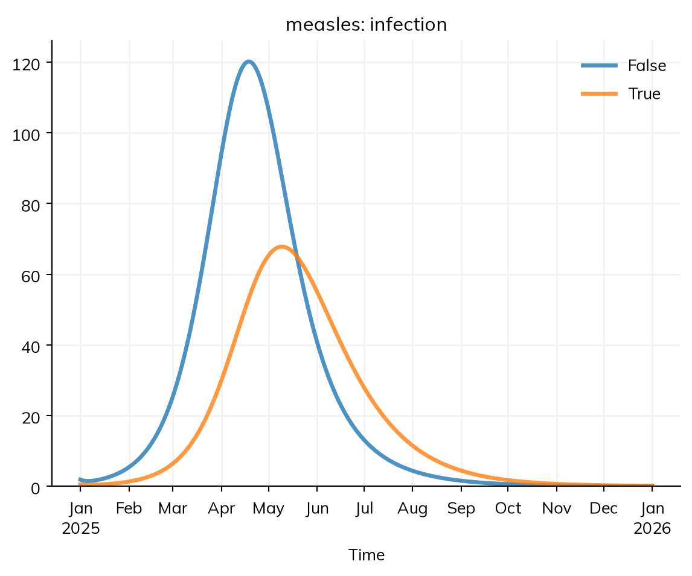
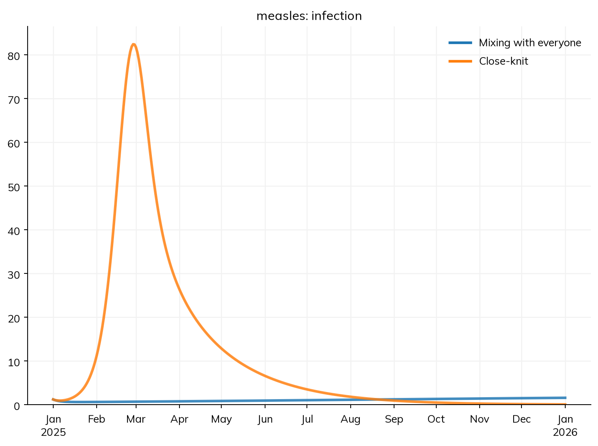
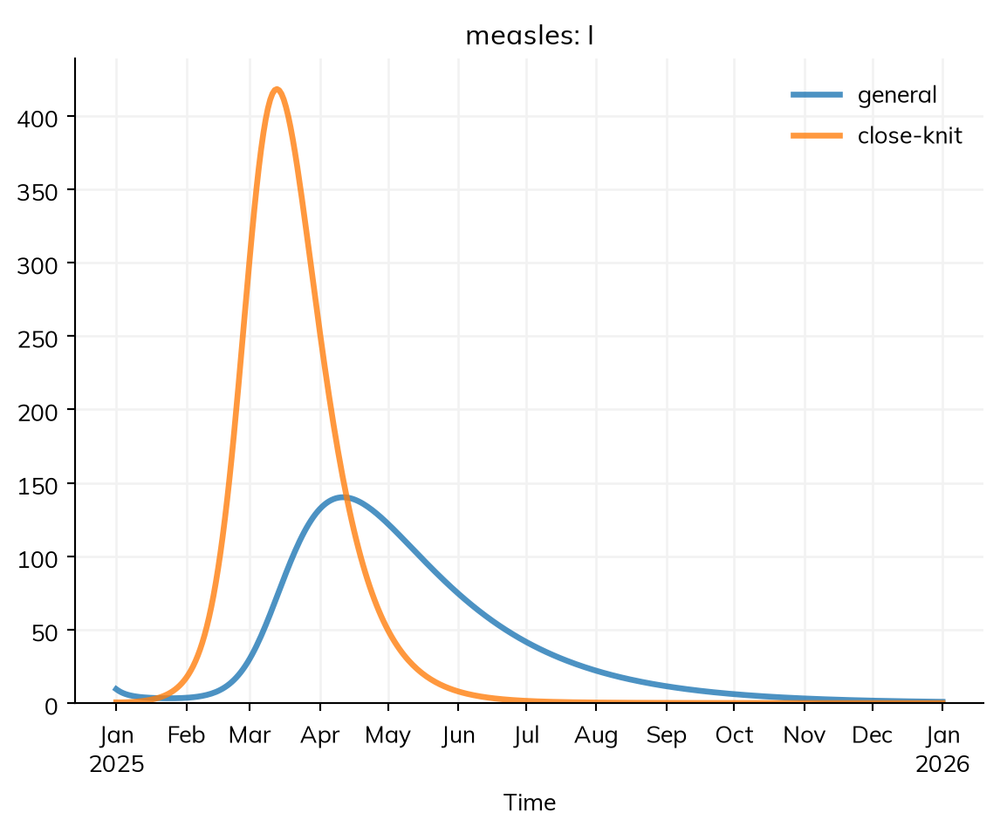
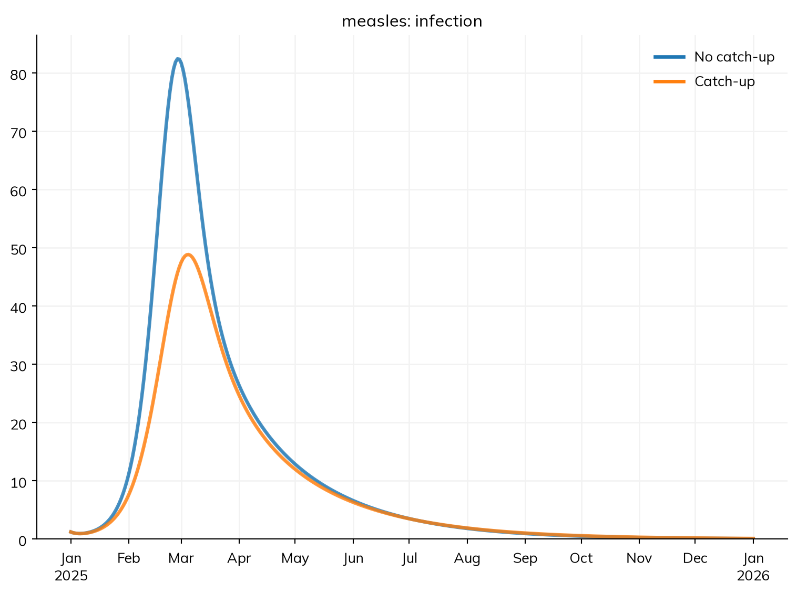
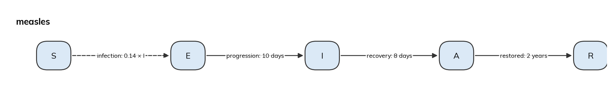
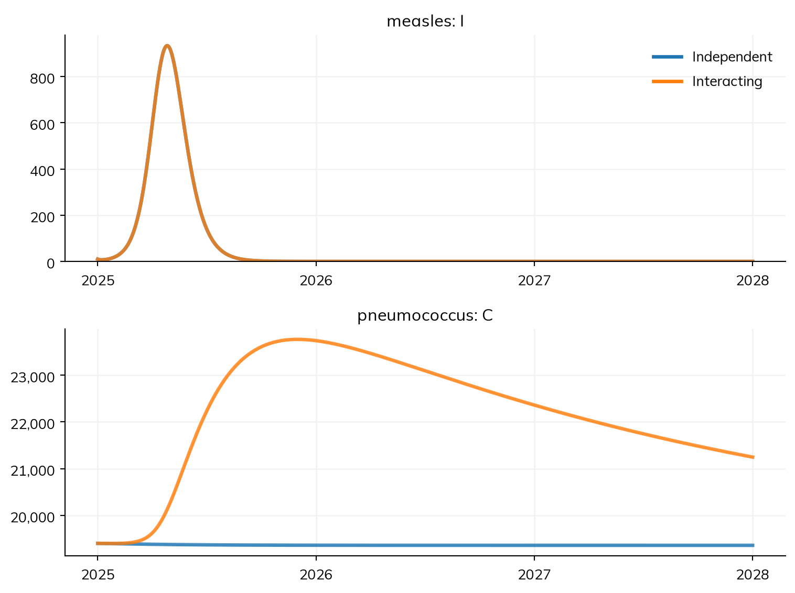

import starsim as ss
def make_measles():
""" The SEIR model of measles, by age, with nobody immune yet """
S, E, I, R = ss.states('S E I R')
infection = S >> E @ 0.14*I # β = 0.14 per contact per day
progression = E >> I @ ss.days(10) # Latent for 10 days on average
recovery = I >> R @ ss.days(8) # Infectious for 8 days on average
measles = ss.Disease(infection, progression, recovery, init_n=dict(I=10), name='measles')
measles.stratify(age={0: 0.3, 15: 0.6, 65: 0.1}) # Ages 0-14, 15-64, and 65+
return measles
age_contacts = [[10, 6, 1], [3, 8, 1], [3, 6, 3]] # Contacts a day, between age groups
settings = dict(total_pop=100_000, start='2025-01-01', stop='2026-01-01')T7 – Stratification and co-transmission
Who is the outbreak in, and does it make other infections worse?
T4 split the model by age, but other differences matter too. This tutorial has two parts, each starting from a model of its own:
- Several ways of grouping people: where vaccine coverage is high, measles outbreaks happen mostly where it is low. This part splits the town by vaccination, and by membership of a close-knit community with low coverage.
- Two diseases that interact: measles leaves people more vulnerable to other infections for years afterwards. This part runs measles with a second disease that it makes worse.
By the end, you will be able to:
- stratify a model by several dimensions, with fractions that differ by another dimension, and contacts between groups of two dimensions;
- move people between groups at a rate, with
ss.transfer(); - run two diseases in one model, and link them with
ss.modify().
Part 1: several ways of grouping people
The starting point
This is the SEIR model of measles from T5 – Interventions and scenarios: 100,000 people in three age groups, mixing by a contact matrix, with 10 infectious on 1 January. In T5, immunity started in R; here it comes from vaccination, so nobody starts immune. A function makes a new copy of the model for each section:
library(starsim)
states("S E I R")
infection <- Transition(S, E, rate = 0.14 * I) # β = 0.14 per contact per day
progression <- Transition(E, I, dur = days(10)) # Latent for 10 days on average
recovery <- Transition(I, R, dur = days(8)) # Infectious for 8 days on average
make_measles <- function() { # The SEIR model of measles, by age, with nobody immune yet
measles <- Disease(infection, progression, recovery, init_n = list(I = 10), name = "measles")
measles$stratify(age = list("0" = 0.3, "15" = 0.6, "65" = 0.1)) # Ages 0-14, 15-64, and 65+
measles
}
age_contacts <- rbind(c(10, 6, 1), c(3, 8, 1), c(3, 6, 3)) # Contacts a day, between age groups
make_sim <- function(measles, ...) { # A sim of 100,000 people for a year, with any other settings given
Sim(measles, total_pop = 100000, start = "2025-01-01", stop = "2026-01-01", ...)
}Vaccination status
To give the population its immunity, stratify by vaccination status. Two doses of measles vaccine protect about 97% of people. Here this is modeled as the vaccinated being 97% less susceptible: everyone vaccinated has 3% of the usual susceptibility (a “leaky” effect), rather than 97% of them being fully protected and 3% not at all (“all or nothing”; see Products). Unlike a vaccination campaign on a date (T5), a dimension gives the immunity a population already has, and splits results by vaccination status.
Coverage often differs by age: here 85% of children, 92% of adults aged 15 to 64, and 95% of people 65 and over. A fraction that differs by another dimension is an ss.by() over both: a row for each age group and a column for each level of vaccination, each row adding up to 1, so each age group keeps its size. Written out, it is a table with a row for each combination:
coverage_by_age = ss.by([[0.15, 0.85], # 0-14: 15% unvaccinated, 85% vaccinated
[0.08, 0.92], # 15-64
[0.05, 0.95]], # 65+
dims=['age', 'vaccinated'])coverage_by_age <- ss$by(rbind(c(0.15, 0.85), # 0-14: 15% unvaccinated, 85% vaccinated
c(0.08, 0.92), # 15-64
c(0.05, 0.95)), # 65+
dims = c("age", "vaccinated"))import pandas as pd
coverage_table = pd.DataFrame(dict(
age = ['0-14', '0-14', '15-64', '15-64', '65+', '65+'],
vaccinated = [False, True, False, True, False, True],
value = [0.15, 0.85, 0.08, 0.92, 0.05, 0.95],
))
coverage_by_age = ss.by(coverage_table)ss.levels() gives the levels of the new dimension with their options: the fractions, and the states the dimension applies to (here only S; see below). ss.modify() then changes a quantity of the disease by level: rel_sus, the relative susceptibility, is 1 for the unvaccinated and 0.03 for the vaccinated:
measles = make_measles()
measles.stratify(vaccinated=ss.levels([False, True], fractions=coverage_by_age, states=['S']))
protection = ss.modify('measles.rel_sus', multiply=ss.by(vaccinated=[1, 0.03])) # The vaccinated are 3% as susceptible
sim = ss.Sim(measles, networks=ss.contacts(ages=[0, 15, 65], matrix=age_contacts), connectors=protection, **settings)
sim.run()
sim.results.measles.infection.by('vaccinated').plot()Sim: measles, 100,000 people, as an ODE, 2025-01-01 to 2026-01-01
measles: R0 = 2.33, with 10 infectious at the start
Note: people do not age between the age groups, since nobody is born or dies; pass aging=True to age them
Done in 0.0062 s; measles: 15,155 infections; at most 1,301 infectious, on 2025-05-12
measles <- make_measles()
measles$stratify(vaccinated = ss$levels(c(FALSE, TRUE), fractions = coverage_by_age, states = list("S")))
protection <- modify("measles.rel_sus", multiply = ss$by(vaccinated = c(1, 0.03))) # The vaccinated are 3% as susceptible
sim <- make_sim(measles, networks = contacts(ages = c(0, 15, 65), matrix = age_contacts), connectors = protection)
sim$run()
sim$results$measles$infection$by("vaccinated")$plot()The run prints an R0 of about 2.3, not 16: R0 here is worked out for the whole population, vaccinated included, and most of it is protected. Who is infected?
res = sim.results.measles
print('Infections:', round(res.infection.sum()))
print('Among the vaccinated:', round(res.infection.select(vaccinated=True).sum()))
print('Among unvaccinated children:', round(res.infection.select(vaccinated=False, age='0-14').sum()))Infections: 15155
Among the vaccinated: 6242
Among unvaccinated children: 4362res <- sim$results$measles
cat("Infections:", round(res$infection$sum()), "\n")
cat("Among the vaccinated:", round(res$infection$select(vaccinated = TRUE)$sum()), "\n")
cat("Among unvaccinated children:", round(res$infection$select(vaccinated = FALSE, age = "0-14")$sum()), "\n")About two in five of those infected are vaccinated, since there are so many more of them. This is common in real outbreaks, and doesn’t mean the vaccine is failing: each vaccinated person is still far less likely to be infected.
states=['S'] splits only S by vaccination: this is partial stratification. Once infected, a vaccinated person is like anyone else in this model, so splitting E, I, and R would only add compartments that behave the same. So results by vaccination count only S and the flows out of it: res.infection.by('vaccinated') says who was infected, but res.I.by('vaccinated') raises an error. A dimension that people mix by can’t be partial, since everyone needs a level of it to mix as. See Stratification for more.
An under-vaccinated community
Overall coverage says little if the unvaccinated are clustered. Suppose 5% of the town belong to a close-knit community in which 60% are vaccinated (at every age), against 98% of everyone else. Overall, 96% are vaccinated; with their susceptibility 97% lower, it is as if about 93% were immune, close to the 94% needed to stop measles spreading (1 − 1/16). Community members make 70% of their contacts with each other and 30% with the rest of the town.
This is a new dimension, community, with coverage now given by community rather than by age:
coverage_by_community = ss.by([[0.02, 0.98], # General: 2% unvaccinated, 98% vaccinated
[0.40, 0.60]], # Close-knit community
dims=['community', 'vaccinated'])
def make_community_measles():
""" The measles model, by age, community, and vaccination """
measles = make_measles()
measles.stratify(community={'general': 0.95, 'close-knit': 0.05})
measles.stratify(vaccinated=ss.levels([False, True], fractions=coverage_by_community, states=['S']))
return measlescoverage_by_community <- ss$by(rbind(c(0.02, 0.98), # General: 2% unvaccinated, 98% vaccinated
c(0.40, 0.60)), # Close-knit community
dims = c("community", "vaccinated"))
make_community_measles <- function() { # The measles model, by age, community, and vaccination
measles <- make_measles()
measles$stratify(community = list("general" = 0.95, "close-knit" = 0.05))
measles$stratify(vaccinated = ss$levels(c(FALSE, TRUE), fractions = coverage_by_community, states = list("S")))
measles
}Contacts are now between groups of two dimensions. With a matrix for each, the contacts between two groups are the product of their entries: a child in the community has 10 contacts a day with children, 70% of them within the community, so 7. To see what the clustering does, compare it with the community mixing like everyone else, with the same coverage:
clustered = ss.contacts(age=age_contacts, community=[[0.984, 0.016], [0.3, 0.7]], ages=[0, 15, 65]) # The rest of the town makes 1.6% of its contacts with the community, so that the contacts each way add up
mixed = ss.contacts(age=age_contacts, community=[[0.95, 0.05], [0.95, 0.05]], ages=[0, 15, 65])
sims = {
'Mixing with everyone': ss.Sim(make_community_measles(), networks=mixed, connectors=protection, **settings),
'Close-knit': ss.Sim(make_community_measles(), networks=clustered, connectors=protection, **settings),
}
msim = ss.parallel(sims)
msim.plot('measles.infection')MultiSim: 2 runs of 2 scenarios (Mixing with everyone, Close-knit)
Done in 0.32 s
clustered <- contacts(age = age_contacts, community = rbind(c(0.984, 0.016), c(0.3, 0.7)), ages = c(0, 15, 65)) # The rest of the town makes 1.6% of its contacts with the community, so that the contacts each way add up
mixed <- contacts(age = age_contacts, community = rbind(c(0.95, 0.05), c(0.95, 0.05)), ages = c(0, 15, 65))
msim <- parallel(list(
"Mixing with everyone" = make_sim(make_community_measles(), networks = mixed, connectors = protection),
"Close-knit" = make_sim(make_community_measles(), networks = clustered, connectors = protection)
))
msim$plot("measles.infection")Mixed with everyone, unvaccinated community members are surrounded mostly by vaccinated people, and the outbreak smolders. Clustered, the community has a reproduction number of about 7 within itself, against about 0.8 in the rest of the town, so it has an explosive outbreak within weeks, which spills over into the town. select() picks out any combination of groups, summing over the dimensions not named:
for sim in msim.sims:
res = sim.results.measles
print(sim.label, '- in the community:', round(res.infection.select(community='close-knit').sum()), '- elsewhere:', round(res.infection.select(community='general').sum()))
msim.sims['Close-knit'].results.measles.I.by('community').plot()Mixing with everyone - in the community: 118 - elsewhere: 270
Close-knit - in the community: 2420 - elsewhere: 1720
for (sim in msim$sims) {
res <- sim$results$measles
cat(sim$label, "- in the community:", round(res$infection$select(community = "close-knit")$sum()), "- elsewhere:", round(res$infection$select(community = "general")$sum()), "\n")
}
msim$sims[["Close-knit"]]$results$measles$I$by("community")$plot()With clustering, there are about ten times as many infections, and the community, 5% of the town, has more than half. A model that averaged coverage over the town would miss this, and with it where vaccination would do the most good.
Moving between groups
So far, nobody changes group. ss.transfer() moves people from one level of a dimension to another at a rate, without changing their disease state. Suppose an outreach program offers catch-up vaccination to unvaccinated community members at a rate of 2 a year (reaching about 85% within a year, if measles doesn’t first), and nobody outside it. A transfer is given to the stratify() call of the dimension it moves people along, by name:
catchup = ss.transfer(dict(vaccinated=True), rate=ss.peryear(ss.by(community=[0, 2])), states=['S']) # To vaccinated, at a rate of 0 a year outside the community and 2 in it
measles = make_measles()
measles.stratify(community={'general': 0.95, 'close-knit': 0.05})
measles.stratify(vaccinated=ss.levels([False, True], fractions=coverage_by_community, states=['S']), catchup=catchup)
sims = {
'No catch-up': ss.Sim(make_community_measles(), networks=clustered, connectors=protection, **settings),
'Catch-up': ss.Sim(measles, networks=clustered, connectors=protection, **settings),
}
msim = ss.parallel(sims)
msim.plot('measles.infection')
print('Doses given:', round(msim.sims['Catch-up'].results.measles.catchup.sum()))
msim.summarize().loc['measles_infection']MultiSim: 2 runs of 2 scenarios (No catch-up, Catch-up)
Done in 0.31 s
Doses given: 606| value | |
|---|---|
| scenario | |
| No catch-up | 4,140 |
| Catch-up | 3,125 |
catchup <- ss$transfer(list(vaccinated = TRUE), rate = peryear(ss$by(community = c(0, 2))), states = list("S")) # To vaccinated, at a rate of 0 a year outside the community and 2 in it
measles <- make_measles()
measles$stratify(community = list("general" = 0.95, "close-knit" = 0.05))
measles$stratify(vaccinated = ss$levels(c(FALSE, TRUE), fractions = coverage_by_community, states = list("S")), catchup = catchup)
msim <- parallel(list(
"No catch-up" = make_sim(make_community_measles(), networks = clustered, connectors = protection),
"Catch-up" = make_sim(measles, networks = clustered, connectors = protection)
))
msim$plot("measles.infection")
cat("Doses given:", round(msim$sims[["Catch-up"]]$results$measles$catchup$sum()), "\n")
msim$summarize()$loc["measles_infection"]A transfer is a transition, so it has a result by its name (catchup). About 600 doses prevent about 1,000 infections, nearly two per dose, since each is given where the outbreak is. Three kinds of movement between groups are easy to confuse:
| Movement | What it is | How it is given |
|---|---|---|
| A transfer | People move steadily, at a rate (catch-up or routine vaccination, migration, a change of risk group) | ss.transfer(), in stratify() |
| A delivery | People move at given times, with a coverage (a vaccination campaign) | ss.vaccinate() or ss.Event(...), as an intervention (T5) |
| Aging | People move up the age groups as they get older | Automatic, when people are born or die |
Dimensions multiply: here S has 3 × 2 × 2 = 12 compartments, and E, I, and R 6 each. sim.describe() lists each dimension, its levels, and the states it applies to. Stratification works the same as agents (see T1): each agent has a level of each dimension, and transfers change it.
Part 2: two diseases that interact
The starting point
Measles damages the immune system’s memory of other infections. For two to three years after recovering, children are more likely to fall ill from other infections (“immune amnesia”), so a measles outbreak leaves a wake of other infections. Modeling this needs a second disease that interacts with measles.
This part starts again from the measles model of T5, with immunity in R by age, and no vaccination dimension. Measles needs one new state, to remember who has had it recently: in a compartmental model, what a person has been through has to be a state. Recovery now leads to A (recovered, with amnesia), and people leave A for R after two years on average.
The second disease is pneumococcus, a bacterium many children carry in the nose and throat for a few weeks at a time, and a leading cause of pneumonia. It is an SIS model: people acquire it (S to C, for carrying) from carriers, and clear it after a month on average. About a quarter of children and a sixth of adults carry it at any time, so it starts there.
The run is three years long, to show the wake. The durations are in days and years, so unit='day' says that the bare values of β are per day (see Time):
import starsim as ss
ages = {0: 0.3, 15: 0.6, 65: 0.1} # Ages 0-14, 15-64, and 65+
contacts = ss.contacts(ages=[0, 15, 65], matrix=[[10, 6, 1], [3, 8, 1], [3, 6, 3]]) # Contacts a day, between age groups
settings = dict(networks=contacts, total_pop=100_000, start='2025-01-01', stop='2028-01-01', unit='day')
S, E, I, A, R = ss.states('S E I A R')
infection = S >> E @ 0.14*I # β = 0.14 per contact per day
progression = E >> I @ ss.days(10) # Latent for 10 days on average
recovery = I >> A @ ss.days(8) # Recovered, with immune amnesia
restored = A >> R @ ss.years(2) # Immune memory of other infections restored after 2 years on average
measles = ss.Disease(infection, progression, recovery, restored,
init = dict(R=ss.by(age=[0.8, 0.92, 0.98])), # The fraction immune in each age group
init_n = dict(I=10),
name = 'measles',
)
measles.stratify(age=ages)
S, C = ss.states('S C')
acquisition = S >> C @ 0.003*C # Acquired through contact with carriers, at a rate of 0.003 per contact per day
clearance = C >> S @ ss.days(30) # Carried for a month on average
pneumococcus = ss.Disease(acquisition, clearance,
init = dict(C=ss.by(age=[0.25, 0.17, 0.17])), # The fraction carrying it in each age group
name = 'pneumococcus',
)
pneumococcus.stratify(age=ages)
measles.diagram()
library(starsim)
ages <- list("0" = 0.3, "15" = 0.6, "65" = 0.1) # Ages 0-14, 15-64, and 65+
age_contacts <- contacts(ages = c(0, 15, 65), matrix = rbind(c(10, 6, 1), c(3, 8, 1), c(3, 6, 3))) # Contacts a day, between age groups
make_sim <- function(...) { # 100,000 people for three years, with any other settings given
Sim(networks = age_contacts, total_pop = 100000, start = "2025-01-01", stop = "2028-01-01", unit = "day", ...)
}
states("S E I A R")
measles <- Disease(
infection = Transition(S, E, rate = 0.14 * I), # β = 0.14 per contact per day
progression = Transition(E, I, dur = days(10)), # Latent for 10 days on average
recovery = Transition(I, A, dur = days(8)), # Recovered, with immune amnesia
restored = Transition(A, R, dur = years(2)), # Immune memory of other infections restored after 2 years on average
init = list(R = ss$by(age = c(0.8, 0.92, 0.98))), # The fraction immune in each age group
init_n = list(I = 10),
name = "measles"
)
measles$stratify(age = ages)
states("S C")
pneumococcus <- Disease(
acquisition = Transition(S, C, rate = 0.003 * C), # Acquired through contact with carriers, at a rate of 0.003 per contact per day
clearance = Transition(C, S, dur = days(30)), # Carried for a month on average
init = list(C = ss$by(age = c(0.25, 0.17, 0.17))), # The fraction carrying it in each age group
name = "pneumococcus"
)
pneumococcus$stratify(age = ages)
measles$diagram()An interaction
ss.modify() changes a quantity for the people a condition selects. Each disease has a relative susceptibility (rel_sus) and transmissibility (rel_trans), both 1 to begin with, so an interaction is a change to one of these for people in some state of the other disease. Here, people with measles or amnesia are twice as likely to acquire pneumococcus (an illustrative value):
amnesia = ss.modify(pneumococcus.rel_sus, multiply=2, who=measles.I | measles.A)amnesia <- modify(pneumococcus$rel_sus, multiply = 2, who = measles$I | measles$A)It reads as a sentence: for people infectious with measles or with amnesia, multiply their susceptibility to pneumococcus by 2. The condition is evaluated as the sim runs, so it stops applying when people reach R, and the modifier never overwrites rel_sus, so nothing needs restoring. Interactions that are part of the biology go in connectors=. Run the two diseases with and without it:
sims = {
'Independent': ss.Sim([measles, pneumococcus], **settings),
'Interacting': ss.Sim([measles, pneumococcus], connectors=amnesia, **settings),
}
msim = ss.parallel(sims)
msim.plot(['measles.I', 'pneumococcus.C'])
msim.summarize().loc['pneumococcus_acquisition']MultiSim: 2 runs of 2 scenarios (Independent, Interacting)
Done in 0.41 s
| value | |
|---|---|
| scenario | |
| Independent | 707,342 |
| Interacting | 813,117 |
msim <- parallel(list(
"Independent" = make_sim(diseases = list(measles, pneumococcus)),
"Interacting" = make_sim(diseases = list(measles, pneumococcus), connectors = amnesia)
))
msim$plot(c("measles.I", "pneumococcus.C"))
msim$summarize()$loc["pneumococcus_acquisition"]The measles outbreak is the same in both, since pneumococcus doesn’t affect it. With the interaction, pneumococcus carriers rise by about a fifth over the outbreak’s year, and stay high for years after, as people with amnesia slowly recover. The effect is larger than the 9% who had measles would suggest: they carry pneumococcus more often, and pass it to more people, including people who never had measles. Since some carriers develop pneumonia, a measles outbreak would cause more pneumonia for years.
Diseases tracked jointly
With the interaction, a compartmental model of pneumococcus needs to know how many of the people susceptible to it have measles amnesia, which separate compartments for each disease can’t say. So Starsim tracks linked diseases jointly, with a compartment for each combination of their states (S and S, A and C, and so on). describe() shows this:
msim.sims['Interacting'].describe()Sim 3 modules, 100,000 people, 2025-01-01 to 2028-01-01
| solver | ode | guessed: every part of the model has a compartmental form |
| unit | day | |
| dimension | age (age): 0-14, 15-64, 65+; people do not age (aging=False) | guessed: no aging, since nobody is born or dies |
| fractions: 0-14 0.3, 15-64 0.6, 65+ 0.1 | ||
| dimension | measles (disease): S, E, I, A, R; applies to the people of pneumococcus | |
| fractions: S 1, E 0, I 0, A 0, R 0 | ||
| dimension | pneumococcus (disease): S, C; applies to the people of measles | |
| fractions: S 1, C 0 | ||
| jointly | measles × pneumococcus: 5 × 2 = 10 joint states of people | "amnesia" acts on pneumococcus by a state of measles |
| 10 compartments in each of 3 groups (30 in all), within ss.options.max_joint (10,000) | ||
| a whole run takes about 4.8 MB for its rates and its results by group | ||
| assumed: the diseases start independent of each other (the fraction in each state of one is the same in every state of the others), and step together, at one timestep |
Disease 'measles' 5 states, 4 transitions
| states | S, E, I, A, R | |
| I infectious | ||
| init: R = by(age=[0.8, 0.92, 0.98]), I = 10 people; the rest in S | ||
| infection | S -> E transmission, from I | |
| beta = 0.14 per day | ||
| rate = 0.14 × I | exposure through the contact matrices | |
| beta on contacts: 0.14 per day per contact | ||
| progression | E -> I spontaneous | |
| time in E ~ exponential(mean = 10 days) | guessed: scalar duration | |
| recovery | I -> A spontaneous | |
| time in I ~ exponential(mean = 8 days) | guessed: scalar duration | |
| restored | A -> R spontaneous | |
| time in A ~ exponential(mean = 2 years) | guessed: scalar duration |
Disease 'pneumococcus' 2 states, 2 transitions
| states | S, C | |
| C infectious | ||
| init: C = by(age=[0.25, 0.17, 0.17]); the rest in S | ||
| acquisition | S -> C transmission, from C | |
| beta = 0.003 per day | ||
| rate = 0.003 × C | exposure through the contact matrices | |
| beta on contacts: 0.003 per day per contact | ||
| clearance | C -> S spontaneous | |
| time in C ~ exponential(mean = 30 days) | guessed: scalar duration |
Mixing and interventions
| mixing | contacts (MixingPools): contact matrix by age | |
| modifier | pneumococcus.rel_sus: amnesia multiply=2 who=(measles.I | measles.A) |
Results and running
| results | S, E, I, A, R, and one flow per transition; also infected, prevalence | |
| results | S, C, and one flow per transition; also infected, prevalence | |
| plan | measles, pneumococcus: as compiled code, the whole run in one call; measles × pneumococcus as one program | |
| amnesia: as tables in the compiled code, as it depends only on time and states | ||
| schedule | every day: amnesia, measles, pneumococcus |
Notes
| note | the states of measles × pneumococcus are tracked jointly: 5 × 2 = 10 joint states per group ("amnesia" acts on pneumococcus by a state of measles) | |
| note | people do not age between the age groups, since nobody is born or dies; pass aging=True to age them |
Per step of measles 1 day
| infection | beta = 0.14 per day → 0.14 per step | |
| progression | rate 0.1 per day → p = 1 - exp(-0.1 × 1) = 0.0952 per step | |
| recovery | rate 0.125 per day → p = 1 - exp(-0.125 × 1) = 0.1175 per step | |
| restored | rate 0.00137 per day → p = 1 - exp(-0.00137 × 1) = 0.0014 per step |
Per step of pneumococcus 1 day
| acquisition | beta = 0.003 per day → 0.003 per step | |
| clearance | rate 0.03333 per day → p = 1 - exp(-0.03333 × 1) = 0.0328 per step |
msim$sims[["Interacting"]]$describe()Its “jointly” line says that the two diseases are tracked as 5 × 2 = 10 joint states in each age group, because the modifier acts on pneumococcus by a state of measles, and that at the start the two infections are assumed independent. Joint states multiply, so above a limit (ss.options.max_joint, 10,000 compartments by default) the default solver runs the model as agents instead. Diseases that don’t refer to each other’s states are not tracked jointly, so link only those that interact. Connectors covers modifiers in full, and connectors written as code.
Exercises
- In the community model, raise coverage in the community from 60% to 80%. How many fewer infections are there in the rest of the town, where coverage hasn’t changed? Why?
- Give the same number of catch-up doses (about 600) to unvaccinated people outside the community instead, using a transfer whose rate is 0 in the community. How many infections do they prevent, compared with the doses given in the community?
- In the model with two diseases, add a measles vaccination campaign for children on 1 February (
ss.vaccinate(efficacy=0.93, who=measles.age < 15, when='2025-02-01', coverage=0.8); the vaccine is for the disease whose age groupswho=names, or givedisease=if it names none, e.g.who=ss.person.age < 15). How many pneumococcus acquisitions does it prevent over the three years, with and without the interaction? What does this mean for working out the benefit of measles vaccination?
Solutions · Next: T8 – Custom modules
Further reading
- Glasser et al. (2016): The effect of heterogeneity in uptake of the measles, mumps, and rubella vaccine on the potential for outbreaks of measles: a modeling study of how clustering of the unvaccinated raises the risk of measles outbreaks
- Mina et al. (2015): Long-term measles-induced immunomodulation increases overall childhood infectious disease mortality: the evidence for measles immune amnesia
- EpiModel Gallery: RSV (age-stratified, multilayer): an age-stratified network model with vaccination of older adults
- EpiModel Gallery: Competing strains: two pathogens spreading in the same population